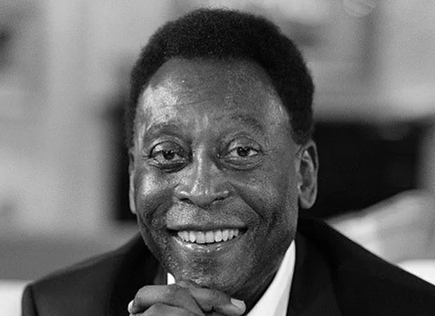
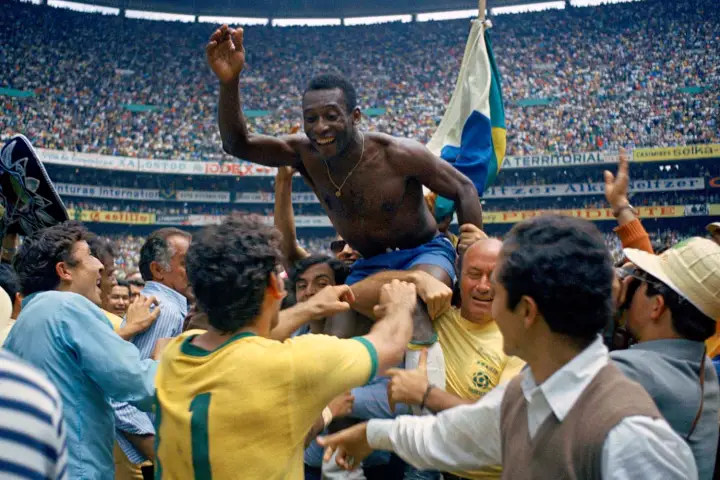
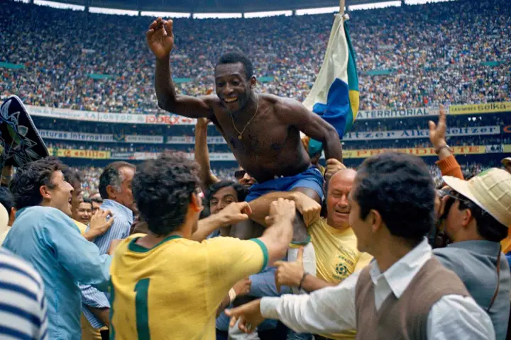
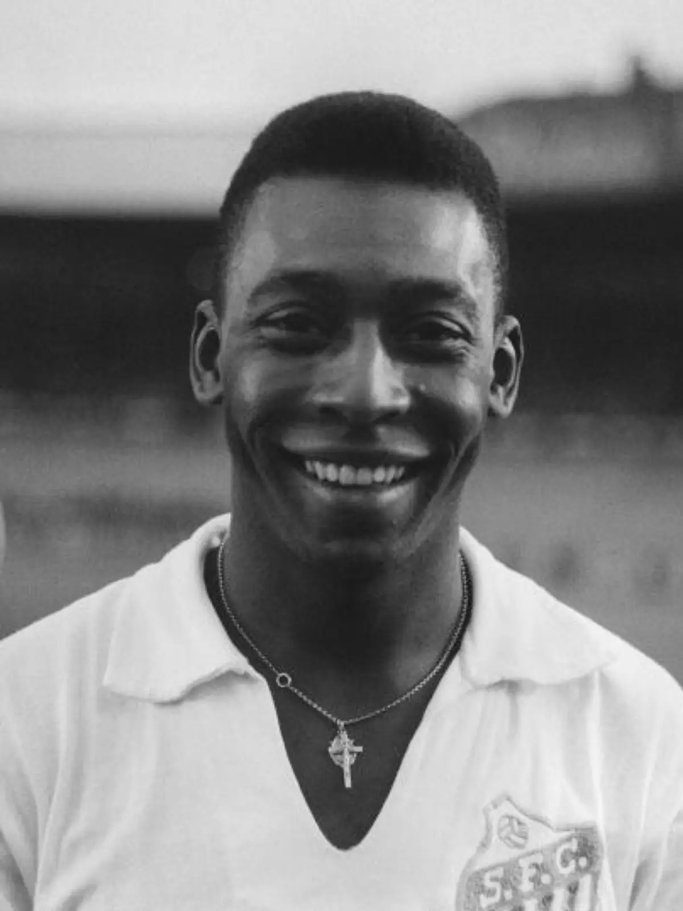
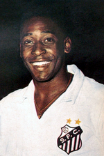
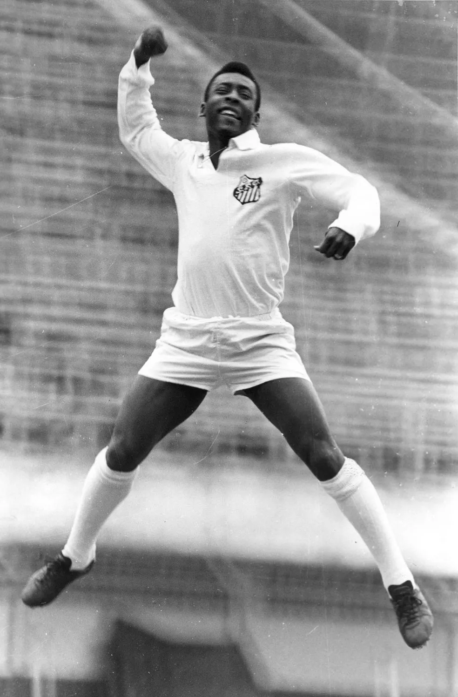
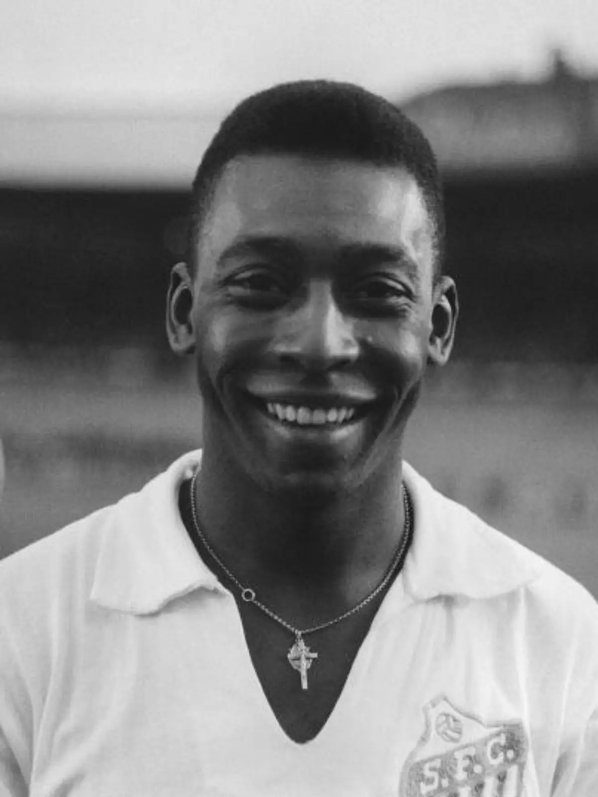
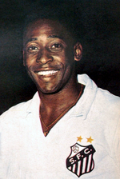
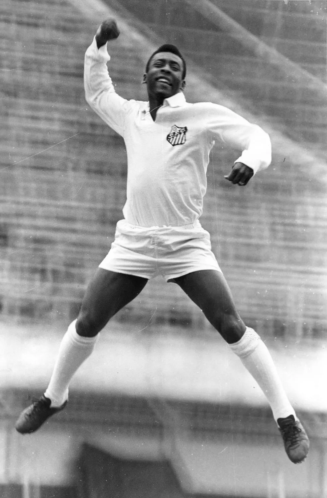

Edson Arantes do Nascimento, conhecido mundialmente como Pelé, é um ex-jogador de futebol brasileiro, nascido em 23 de outubro de 1940, em Três Corações, Minas Gerais. Pelé é amplamente considerado um dos maiores jogadores de futebol de todos os tempos.
Pelé começou sua carreira no Santos Futebol Clube em 1956, aos 15 anos de idade, e rapidamente se destacou como um jogador excepcional. Ele conquistou inúmeros títulos com o Santos, incluindo 10 títulos do Campeonato Paulista e dois títulos da Copa Libertadores.
Em nível internacional, Pelé foi fundamental para as conquistas da Seleção Brasileira na Copa do Mundo da FIFA. Ele venceu o torneio em três ocasiões: em 1958, na Suécia, aos 17 anos, em 1962, no Chile, e em 1970, no México. Em 1970, no México, Pelé teve uma atuação magistral, liderando o Brasil a um título mundial impressionante.
Pelé é conhecido por sua técnica incrível, visão de jogo excepcional, habilidade de finalização e capacidade de driblar adversários com facilidade. Ele marcou mais de 1.000 gols durante sua carreira e é o único jogador a conquistar três Copas do Mundo.
Além de suas conquistas no campo, Pelé também é admirado por seu carisma, humildade e dedicação ao esporte. Ele é uma figura icônica que transcende o mundo do futebol e é considerado um verdadeiro embaixador do esporte.
 

 




